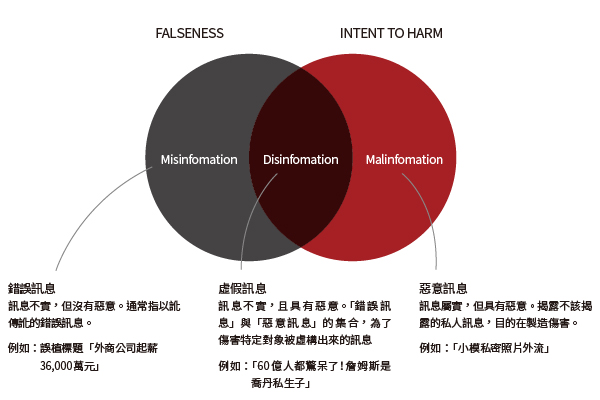

舉例來說，某個社交媒體上可能流傳著關於一個明星的假消息，例如虛假的婚姻或不實的獎項獲得者。這些謠言和流言可能沒有可靠的來源，但它們可以迅速傳播，對個人或組織的聲譽造成損害。例如，有人在社交媒體上散佈關於一位知名演員遭遇意外的謠言，聲稱他受傷住院。
舉例來說，一家新聞網站可能發布了一則關於一個政治人物的報導，但卻省略了重要的事實或使用了不準確的資料，以扭曲事件的真相。
舉例來說，某廣告宣稱他們的產品可以瞬間減肥，但實際上這只是誇大宣傳，並沒有科學依據。
舉例來說，某個社交媒體帳戶可能會修改一段影片，使其看起來更具有爭議性，從而引起公眾的注意並推動特定的議程。